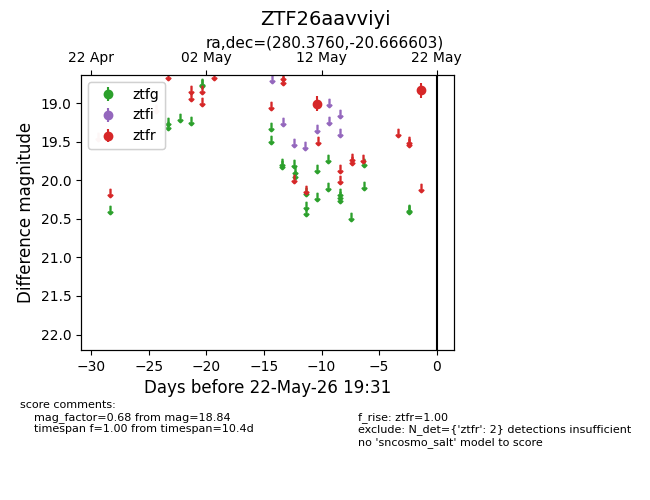
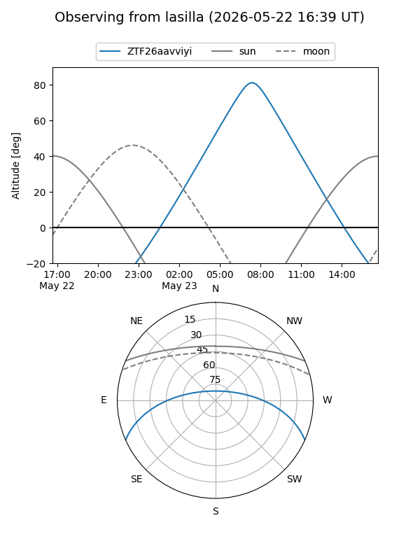
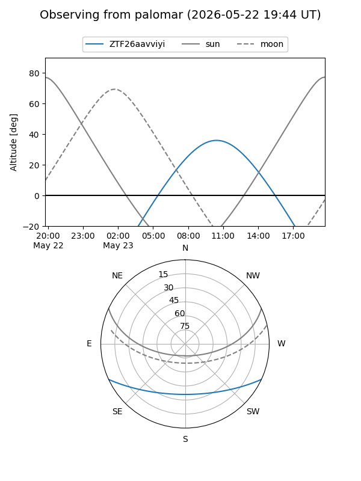

ZTF26aavviyi
Target ZTF26aavviyi at 2026-05-22 19:33
Aliases and brokers:
lsst-FINK: link
lsst-Lasair: link
lsst-ALeRCE: link
ztf-FINK: link
ztf-Lasair: link
ztf-ALeRCE: link
alt names
ZTF26aavviyi (ztf,fink_ztf)
Coordinates:
equatorial (ra, dec) = 280.3760,-20.66660
equatorial (HMS+DMS) = 18:41:30.25,-20:39:59.77
galactic (l, b) = (13.3465,-7.17198)
Flags:
Photometry:
last ztfr=18.84
2 ztfr detections
Lightcurve

Visibility


Additional plots